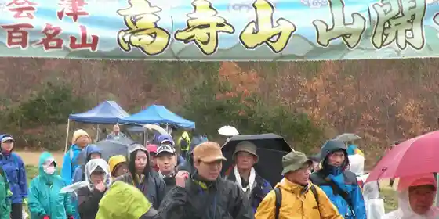
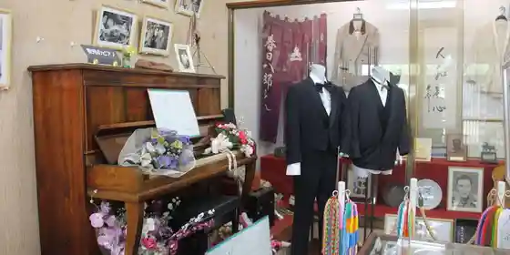

Hokai Tera Nakano Takeko no Haka
Aizubange, Fukushima · 0242-83-3519 · Official / source link
Bakaku Seihin
Aizubange, Fukushima · 0242-83-2963 · Official / source link
Taka Terayama
Aizubange, Fukushima · 0242-83-5711 · Official / source link

Ue Unai Kusurishi
Aizubange, Fukushima · 0242-83-1953 · Official / source link
Kasuga Hachiro Omoide Kan
Aizubange, Fukushima · 0242-82-4601 · Official / source link

Aizubange Maizo Bunkazai Center
Aizubange, Fukushima · 0242-83-1421 · Official / source link
Miso Tsukuri Kyoshitsu
Aizubange, Fukushima · 0242-83-3723 · Official / source link
Basashi Shi
Aizubange, Fukushima · 0242-83-5711 · Official / source link
Hiyashi Ramen
Aizubange, Fukushima · 0242-83-5711 · Official / source link
Megumi Takashi Tera
Aizubange, Fukushima · 0242-83-3171 · Official / source link
Soku Matsu Toge
Aizubange, Fukushima · 0242-83-2111 · Official / source link
Tsuru Numa Green Park
Aizubange, Fukushima · 0242-83-5711 · Official / source link
Akebono Shuzo
Aizubange, Fukushima · 0242-83-2065 · Official / source link
Toyokuni Shuzo
Aizubange, Fukushima · 0242-83-2521 · Official / source link
Hiroki Shuzo Main Shop
Aizubange, Fukushima · 0242-83-2104 · Official / source link
Sato Farm
Aizubange, Fukushima · 0242-82-2244 · Official / source link
Sugi no Itozakura
Aizubange, Fukushima · 0242-83-5711 · Official / source link
Kyu Igarashi Ie House (Aizubange)
Aizubange, Fukushima · 0242-83-3010 · Official / source link